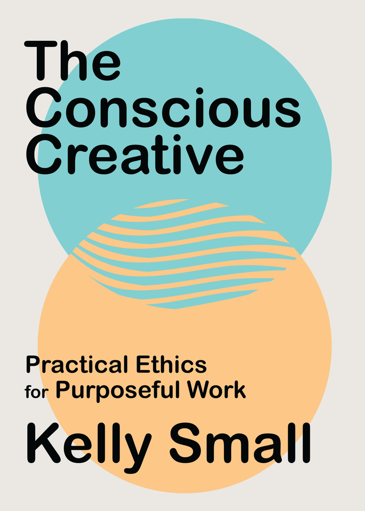

Critical AI
Books examining artificial intelligence through critical, ethical, and social lenses
Empire of AI
Dreams and Nightmares in Sam Altman's OpenAI
The AI Con
How to Fight Big Tech's Hype and Create the Future We Want
Unmasking AI
My Mission to Protect What Is Human in a World of Machines
The AI Mirror
How to Reclaim Our Humanity in an Age of Machine Thinking
Data & Algorithms
Books focused on data bias, algorithmic decision-making, and their societal impacts
Burst Your Bubble!
Outsmart the Algorithms and See What You're Missing
Invisible Women
Data Bias in a World Designed for Men
Technically Wrong
Sexist Apps, Biased Algorithms, and Other Threats of Toxic Tech
Weapons of Math Destruction
How Big Data Increases Inequality and Threatens Democracy
Tech & Society
Critical examinations of technology's role in society, power structures, and social justice
Viral Justice
How We Grow the World We Want
The Age of Surveillance Capitalism
The Fight for a Human Future at the New Frontier of Power
Race After Technology
Abolitionist Tools for the New Jim Code
Technology and the Virtues
A Philosophical Guide to a Future Worth Wanting
Privacy & Surveillance
Books exploring privacy rights, surveillance technologies, and data protection
Your Face Belongs to Us
A Tale of AI, a Secretive Startup, and the End of Privacy
Understanding Privacy
Design & Ethics
Books on ethical design practices, inclusive design, and responsible creation
Design for Real Life
Ruined by Design
How Designers Destroyed the World, and What We Can Do to Fix It
Design after Capitalism
Transforming Design Today for an Equitable Tomorrow
Extra Bold
A Feminist, Inclusive, Anti-Racist, Nonbinary Field Guide for Graphic Designers

The Conscious Creative
Practical Ethics for Purposeful Work
Tech Power & Labor
Books examining power dynamics in technology, labor rights, and wealth concentration
Careless People
A Cautionary Tale of Power, Greed, and Lost Idealism
You Deserve a Tech Union
Survival of the Richest
Escape Fantasies of the Tech Billionaires
Winners Take All
The Elite Charade of Changing the World
Human Psychology & Ethics
Understanding human behavior, biases, and moral decision-making
How to Be Perfect
The Correct Answer to Every Moral Question